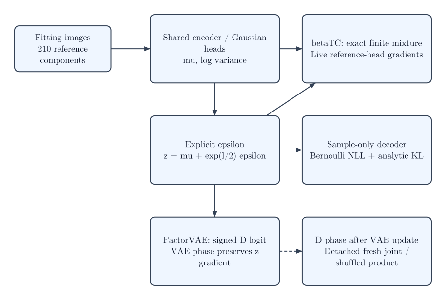
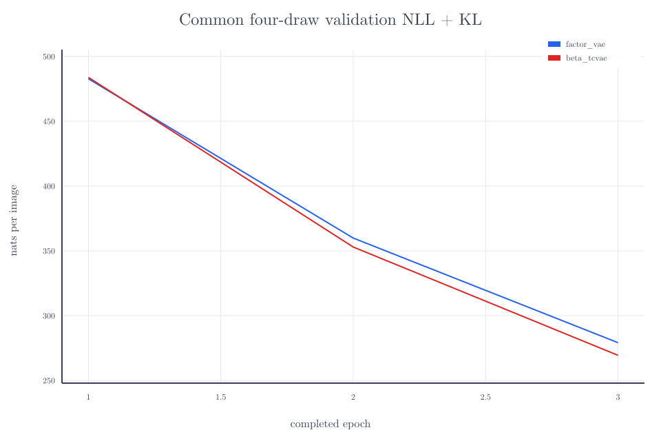
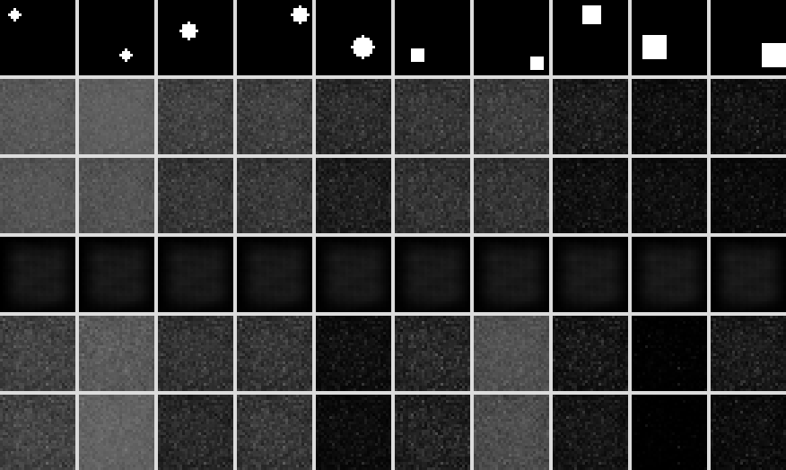
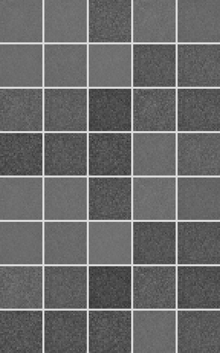

FactorVAE and betaTCVAE: Two Ways to Penalize Latent Dependence
Abstract
Total correlation measures dependence among latent coordinates. This report compares a learned joint-versus-product discriminator with an exact finite-mixture calculation, keeping the same compact Gaussian VAE, initial arrays, minibatch order and explicit noise banks. On294 unique binary circle/square images, each VAE receives21 Adam updates; FactorVAE also receives21 separate discriminator updates. Common four-draw validation NLL+analytic KL selects each checkpoint. Both select epoch3, but decode(mu) test MSE0.08413/0.07537 is worse than the fitting-only mean0.04855. Unfiltered predictions, prior codes, traversals and heldout probes retain that limitation. This small run is a mechanism demonstration, not evidence of successful disentanglement or a reproduction of either paper's benchmark.
From the aggregated posterior to two TC surrogates
The encoder gives q(z|x)=N(mu(x),diag(exp(l(x)))); supplied independent standard-normal noise makes z=mu+exp(l/2)⊙epsilon differentiable. A784→32ReLU encoder feeds two linear four-coordinate heads;4→32ReLU→784 logits form a sample-only Bernoulli decoder. Pixels are summed, latent coordinates are summed, and images are averaged. With logit a, R(x,z)=sum_j[softplus(a_j)−x_j a_j] and K(x)=0.5 sum_d[mu_d²+exp(l_d)−1−l_d]. The unweighted VAE loss estimates the negative ELBO from [Kingma and Welling](https://arxiv.org/abs/1312.6114).
For aggregated q(z)=E_x q(z|x), total correlation is
A factorized conditional q(z|x) can still have a dependent aggregated posterior: different images move several means together. Penalizing every conditional KL is therefore different from explicitly penalizing TC. [Kim and Mnih's FactorVAE](https://proceedings.mlr.press/v80/kim18b.html) learns the density ratio using joint samples versus independently shuffled latent columns. [Chen et al.'s betaTCVAE](https://arxiv.org/abs/1802.04942) separates TC from the other aggregated-posterior terms. This report's betaTC variant uses *all210 fitting posteriors as an equally weighted finite mixture*, rather than the paper's minibatch estimator.
#include <dm/dm.hpp>
int main() {
std::filesystem::create_directories("build");
dm::graphics::Diagram d(52, 1150);
dm::graphics::DiagramNodeStyle wide;
wide.width = 5.1;
wide.height = 2.7;
dm::graphics::DiagramStroke dashed;
dashed.arrow = true;
dashed.dashed = true;
d.node("x", {0, 0}, "Fitting images\n210 reference components")
.node("q", {6, 0}, "Shared encoder / Gaussian heads\nmu, log variance", wide)
.node("z", {6, -4}, "Explicit epsilon\nz = mu + exp(l/2) epsilon", wide)
.node("dec", {12, -4}, "Sample-only decoder\nBernoulli NLL + analytic KL", wide)
.node("mix", {12, 0}, "betaTC: exact finite mixture\nLive reference-head gradients", wide)
.node("disc", {6, -8}, "FactorVAE: signed D logit\nVAE phase preserves z gradient", wide)
.node(
"fit",
{12, -8},
"D phase after VAE update\nDetached fresh joint / shuffled product",
wide)
.edge("x", "q")
.edge("q", "z")
.edge("z", "dec")
.edge("q", "mix")
.edge("z", "mix")
.edge("z", "disc")
.edge("disc", "fit", "", dashed)
.save_svg("build/tc_method.svg");
}
A hand-checkable dependent mixture
Take two equally weighted diagonal unit Gaussians with means(−1,−1) and(1,1). Let v=exp(−2). At z=(1,1), the joint/product ratio is2(1+v²)/(1+v)²; at z=(1,−1), it is4v/(1+v)². The second log ratio is negative. TC is nonnegative as an expectation under the *same* joint density; a finite set of supplied points can have negative average log ratio. A learned discriminator can also give signed values. Neither value is clipped to zero.
#include <dm/dm.hpp>
int main() {
namespace n = dm::nn;
const auto t = n::DType::Float64;
const auto z = n::tensor({1., 1., 1., -1.}, {2, 2}, t),
mu = n::tensor({-1., -1., 1., 1.}, {2, 2}, t), lv = n::zeros({2, 2}, t);
const auto o = n::models::EmpiricalTotalCorrelation(z, mu, lv);
const double v = std::exp(-2.);
const double a = std::log(2 * (1 + v * v) / std::pow(1 + v, 2)),
b = std::log(4 * v / std::pow(1 + v, 2));
if (std::abs(o.per_case.at({0}) - a) > 1e-14 || std::abs(o.per_case.at({1}) - b) > 1e-14 ||
o.mean.item() >= 0)
return 1;
auto chart = dm::graphics::RPlot::create();
chart.lines({0, 1}, {a, b}, "pointwise log ratio", dm::RGBA{37, 99, 235}, 2)
.lines({0, 1}, {0, 0}, "zero", dm::RGBA{100, 100, 100}, 1)
.title("Signed log ratios of a dependent mixture")
.x_label("0: aligned point; 1: crossed point")
.y_label("log joint / product, nats")
.save_svg("build/tc_hand.svg");
std::print("Aligned {:.9f}; crossed {:.9f}; supplied-point mean {:.9f}.\n", a, b, o.mean.item());
}Aligned 0.457441086; crossed -0.867561661; supplied-point mean -0.205060287.

For references r=1..R, define c_brd=−0.5[(z_bd−mu_rd)²exp(−l_rd)+l_rd+log(2pi)]. Then
With responsibilities w_br=softmax_r(sum_d c_brd) and v_brd=softmax_r(c_brd), the mean log-ratio derivative with respect to c_brd is(w_br−v_brd)/B. Each component contributes derivatives dc/dz=−(z−mu)exp(−l), dc/dmu=(z−mu)exp(−l), and dc/dl=0.5[(z−mu)²exp(−l)−1]. Both reference heads must receive these gradients. Log-sum-exp avoids density underflow for faraway samples. A one-component diagonal mixture has zero log ratio. Float32 execution retains the original rounded log constants. The following algebra archive includes all sample/reference derivatives and an extreme-value check.
#include <dm/dm.hpp>
namespace nn = dm::nn;
void Require(bool c, const std::string& s) {
if (!c)
throw std::runtime_error(s);
}
void Near(double x, double y, double t, const std::string& s) {
Require(std::abs(x - y) <= t, s);
}
void Checks(const std::filesystem::path& root) {
auto z = nn::from_vector(std::vector<float>{.3f, -.2f, 1.f, .4f}, {2, 2}).requires_grad_();
auto mu =
nn::from_vector(std::vector<float>{0.f, 0.f, 1.f, -.3f, -.5f, .8f}, {3, 2}).requires_grad_();
auto lv =
nn::from_vector(std::vector<float>{.2f, -.3f, .4f, .1f, -.6f, .5f}, {3, 2}).requires_grad_();
auto tc = nn::models::EmpiricalTotalCorrelation(z, mu, lv);
auto g = nn::grad(tc.mean, {z, mu, lv});
nn::Tensor zero, extreme;
{
nn::NoGradGuard guard;
zero = nn::models::EmpiricalTotalCorrelation(
z, nn::tensor({{0.f, 0.f}}), nn::tensor({{.2f, -.3f}}))
.per_case;
extreme =
nn::models::EmpiricalTotalCorrelation(nn::tensor({{1000.f, -1000.f}}), mu, lv).per_case;
}
std::vector<nn::Tensor> out{
tc.per_case, tc.log_joint, tc.log_product, g[0], g[1], g[2], zero, extreme};
for (auto& t : out) {
t = t.detach().contiguous();
for (float v : t.to_vector<float>())
Require(std::isfinite(v), "finite TC algebra and extreme log densities");
}
const auto zv = out[6].to_vector<float>();
for (int i = 0; i < 2; ++i)
Near(zv[i], 0, 1e-6, "one diagonal Gaussian has factorized density");
nn::save_npz(
(root / "tc_algebra.npz").string(),
{{"z", z.detach()},
{"mu", mu.detach()},
{"log_variance", lv.detach()},
{"tc", out[0]},
{"log_joint", out[1]},
{"log_product", out[2]},
{"dz", out[3]},
{"dmu", out[4]},
{"dlv", out[5]},
{"single_component_tc", out[6]},
{"extreme_tc", out[7]}});
std::cout
<< "TC algebra/sample+reference gradients/single-component zero/extreme stable density passed"
<< std::endl;
}
int main() {
std::filesystem::create_directories("build/tc_vae");
Checks("build/tc_vae");
}TC algebra/sample+reference gradients/single-component zero/extreme stable density passed
Alternating updates and what the discriminator logit means
D is4→16tanh→1linear,97 scalars in four leaves, seed2309. Positive logit means joint; negative means product. With balanced class priors the optimal logit is log(q/product). The D loss is0.5[mean softplus(−D(joint))+mean softplus(D(product))], with a separate mean for each group. At zero logits it is log2. The VAE loss is mean(R+K)+3 mean D(z). The factor3 is gamma, without a sigmoid on D(z). At an imperfect discriminator this is a signed surrogate, not a guaranteed nonnegative TC estimate.
For *each* minibatch, update only the VAE, preserving the continuous path through D to z. Then draw an independent fitting minibatch using order seed2303 and fresh noise seeds2334–2336 from the updated VAE. Explicitly detach those joint codes. With one local MT19937(seed2311+step), reset the row index vector and independently shuffle each column to approximate a product sample. Finite-batch permutations preserve each marginal multiset, can retain rows, and do not create independent population samples. Use a separate Adam state and update only D; verify every opposite-store parameter is unchanged in each phase. The native API performs no hidden optimizer step.
For betaTC, loss=mean(R+K)+3 mean(log joint−log product), corresponding to beta_TC=4. All210 fitting reference heads are re-encoded at every forward with the current shared weights. They remain differentiable. Reference images never come from validation/test, and their decoder is never evaluated. Evaluating heldout z against this fitting mixture is not TC of a heldout aggregated posterior. The API accepts reference matrices; fitting-only provenance is the caller's duty.
Native data preparation and matched explicit randomness
The known-factor lattice has294 unique binary28×28 images: shape2×size3×x7×y7. The deterministic residue split gives210 fit,42 validation and42 test. Source IDs and all 230,496 pixels are independently regenerated by the development oracle. Shape and factor labels enter *post-training diagnostics only*. This teaching lattice replaces no external benchmark. Native preparation records its provenance in the shared configurable dataset cache.
#include <dm/dm.hpp>
int main() {
namespace n = dm::nn;
std::filesystem::create_directories("build/tc_vae");
const std::filesystem::path cache = dm::datasets::data_home();
dm::datasets::prepare_example_data("beta-vae-assets", cache.string());
auto arrays = n::load_npz((cache / "beta_vae/factors.npz").string());
std::set<int> ids;
std::set<std::vector<int>> images;
for (auto& [name, value] : arrays) {
if (name.ends_with("_images")) {
for (int b = 0; b < value.size(0); ++b)
if (!images.insert(n::select(value, 0, b).to_vector<int>()).second)
return 1;
value = n::cast(value, n::DType::Float32);
}
if (name.ends_with("_source_ids"))
for (int id : value.to_vector<int>())
if (!ids.insert(id).second)
return 1;
}
if (ids.size() != 294 || images.size() != 294)
return 1;
n::save_npz("build/tc_vae/data.npz", arrays);
std::filesystem::copy_file(
cache / "beta_vae/manifest.json",
"build/tc_vae/data_manifest.json",
std::filesystem::copy_options::overwrite_existing);
std::print("294 unique images / IDs; fitting210, validation42, test42; four factor columns.\n");
}294 unique images / IDs; fitting210, validation42, test42; four factor columns.
Both VAEs share every initial array (seed2237), order BatchOrder(210,32,2243), and noise. Fresh training banks use2252/2253/2254, fixed four-draw banks fit2273/validation2267/test2269, and20 shared prior codes2281. GaussianNoise uses local MT19937/Box–Muller Float64 values, then casts to Float32; both banks are saved. Unused D-noise banks are also saved for betaTC, matching the original evidence. Seven updates/epoch include a final18-row batch. Three epochs give21 VAE updates/model and21 additional D updates for FactorVAE. Adam uses.003,.9/.999,1e-8.
Completed epochs1–3 are eligible; epoch-zero test score is a control. A *common unweighted* four-draw validation NLL+analytic KL selects each model; weighted objectives are different quantities. Save the FactorVAE discriminator at the same selected epoch. Accumulate Float32 per-row NLL values in Float64, draw then row; count analytic KL once. Signed TC averages one Float32 scalar per draw. Test data never select the checkpoint.
The complete program below leaves both optimizer steps visible. Helpers provide I/O, native forward calls and metric aggregation; they contain no training loop.
#include <dm/dm.hpp>
namespace nn = dm::nn;
void Require(bool condition, const std::string& why) {
if (!condition)
throw std::runtime_error(why);
}
void Near(double x, double y, double tolerance, const std::string& why) {
Require(std::abs(x - y) <= tolerance, why);
}
struct BetaFactorData {
nn::Tensor images, factors, source;
};
struct VaeNoiseBank {
nn::Tensor standard, epsilon;
};
nn::Tensor Flatten(const nn::Tensor& t) {
return nn::reshape(t, {t.size(0), 784});
}
nn::Tensor Find(const nn::NamedTensors& a, const std::string& key) {
for (const auto& [k, v] : a)
if (k == key)
return v;
throw std::runtime_error(key);
}
std::vector<float> Bytes(const nn::Tensor& t) {
return t.contiguous().to_vector<float>();
}
nn::NamedTensors Arrays(const nn::ParameterStore& p) {
nn::NamedTensors a;
for (const auto& k : p.names())
a.emplace_back(k, p.at(k).detach().clone());
return a;
}
auto Snapshot(const nn::ParameterStore& p) {
return p.flatten();
}
nn::NamedTensors CheckGradients(
const nn::ParameterStore& p,
const std::vector<nn::Tensor>& gs,
const std::string&,
const std::string&) {
nn::NamedTensors a;
Require(gs.size() == p.size(), "all10 gradients");
const auto names = p.names();
for (std::size_t i = 0; i < gs.size(); ++i) {
double norm = 0;
for (double x : gs[i].to_vector<double>()) {
Require(std::isfinite(x), "finite derivatives");
norm += x * x;
}
Require(norm > 0, "nonzero derivative in each tensor");
a.emplace_back(names[i], gs[i]);
}
return a;
}
VaeNoiseBank BetaVaeNoise(std::int64_t n, std::int64_t samples, std::uint32_t seed) {
const auto standard = nn::models::GaussianNoise({n, 4}, samples, seed);
return {standard, nn::cast(standard, nn::DType::Float32)};
}
nn::Tensor BetaVaeNoiseAt(const VaeNoiseBank& bank, int k) {
return nn::select(bank.epsilon, 0, k).contiguous();
}
nn::models::TcVaeOutput Forward(
bool factor,
nn::ParameterStore& p,
nn::ParameterStore& d,
const nn::Tensor& refs,
const nn::Tensor& images,
const nn::Tensor& epsilon) {
return factor
? nn::models::FactorVariationalAutoencoder(p, d, Flatten(images), epsilon)
: nn::models::BetaTcVariationalAutoencoder(p, Flatten(images), epsilon, Flatten(refs));
}
std::vector<nn::Tensor> Evaluate(
bool factor,
nn::ParameterStore& p,
nn::ParameterStore& d,
const nn::Tensor& refs,
const nn::Tensor& images,
const nn::Tensor& epsilon) {
nn::NoGradGuard guard;
const auto o = Forward(factor, p, d, refs, images, epsilon);
std::vector<nn::Tensor> out{
o.net.mu,
o.net.log_variance,
o.net.z,
o.net.probability,
o.net.reconstruction_nll,
o.net.kl,
o.loss,
o.net.unweighted_loss,
o.tc};
for (const auto& t : out)
for (double v : t.to_vector<double>())
Require(std::isfinite(v), "finite outputs");
return out;
}
nn::Tensor Decode(nn::ParameterStore& p, const nn::Tensor& z) {
nn::NoGradGuard guard;
return nn::sigmoid(nn::models::GaussianVaeDecode(p, z));
}
std::vector<double> TotalCorrelationScore(
bool factor,
nn::ParameterStore& p,
nn::ParameterStore& d,
const nn::Tensor& refs,
const nn::Tensor& images,
const VaeNoiseBank& bank) {
double nll = 0, kl = 0, tc = 0;
const auto n = images.size(0), samples = bank.epsilon.size(0);
for (int k = 0; k < samples; ++k) {
auto o = Evaluate(factor, p, d, refs, images, BetaVaeNoiseAt(bank, k));
auto a = o[4].to_vector<float>(), b = o[5].to_vector<float>();
for (int i = 0; i < n; ++i) {
nll += a[i];
if (k == 0)
kl += b[i];
}
tc += o[8].item<float>();
}
nll /= double(n * samples);
kl /= double(n);
tc /= double(samples);
return {nll, kl, nll + kl, nll + kl + 3 * tc};
}
double MaxAbsDiff(const nn::Tensor& a, const nn::Tensor& b, int n) {
const auto x = Bytes(a), y = Bytes(b);
double d = 0;
for (int i = 0; i < n; ++i)
d = std::max(d, std::abs(double(x[i]) - y[i]));
return d;
}
double Mse(const nn::Tensor& a, const nn::Tensor& b) {
return nn::mean(
nn::square(
nn::cast(Flatten(a), nn::DType::Float64) -
nn::cast(Flatten(b), nn::DType::Float64)))
.item();
}
double Train(
bool factor,
const std::vector<BetaFactorData>& pools,
const std::vector<VaeNoiseBank>& train_noise,
const std::vector<VaeNoiseBank>& eval_noise,
const VaeNoiseBank& prior_noise,
int epochs,
const std::filesystem::path& root,
const nn::NamedTensors& initial,
const nn::NamedTensors& initial_disc) {
const auto directory = root / (factor ? "factor_vae" : "beta_tcvae");
std::filesystem::create_directories(directory);
nn::ParameterStore model(2237), discriminator(2309);
for (const auto& [name, value] : initial)
model.set(name, value.clone());
if (factor) {
nn::NoGradGuard guard;
nn::models::FactorDiscriminator(discriminator, nn::zeros({1, 4}));
}
if (factor)
for (const auto& [name, value] : initial_disc)
discriminator.set(name, value.clone());
nn::OptimizerConfig config;
config.kind = nn::OptimizerKind::Adam;
nn::Optimizer optimizer(model, .003, config);
std::unique_ptr<nn::Optimizer> disc_optimizer;
if (factor)
disc_optimizer = std::make_unique<nn::Optimizer>(discriminator, .003, config);
if (factor)
nn::save_npz((directory / "initial_discriminator.npz").string(), Arrays(discriminator));
Require(model.size() == 10 && model.count() == 51416, "compact four-dimensional betaVAE census");
nn::save_npz((directory / "initial_arrays.npz").string(), Arrays(model));
auto initial_score = TotalCorrelationScore(
factor, model, discriminator, pools[0].images, pools[2].images, eval_noise[2]);
nn::BatchOrder order(210, 32, 2243), disc_order(210, 32, 2303);
std::ofstream disc_batches(directory / "discriminator_batches.tsv"),
history(directory / "history.tsv"), batches(directory / "batches.tsv");
disc_batches << "epoch\tstep\trow\tsource_id\n";
history.precision(17);
history << "epoch\tfit_preupdate_weighted_objective\tvalidation_nll\tvalidation_kl\tvalidation_"
"negative_elbo\t"
"validation_weighted_objective\n";
batches << "epoch\tstep\trow\tsource_id\n";
const auto fit_source = pools[0].source.to_vector<int>();
const auto best_path = (directory / "best.npz").string(),
best_disc = (directory / "best_discriminator.npz").string();
double best = std::numeric_limits<double>::infinity();
int selected = 0, step = 0;
const auto started = std::chrono::steady_clock::now();
for (int epoch = 1; epoch <= epochs; ++epoch) {
auto epsilon = BetaVaeNoiseAt(train_noise[epoch - 1], 0);
auto disc_noise = BetaVaeNoise(210, 1, 2333 + epoch);
nn::save_npz(
(directory / ("discriminator_noise_epoch" + std::to_string(epoch) + ".npz")).string(),
{{"standard", disc_noise.standard}, {"epsilon", disc_noise.epsilon}});
order.begin_epoch();
disc_order.begin_epoch();
double sum = 0;
int seen = 0;
for (;;) {
auto rows = order.next();
if (rows.empty())
break;
auto input = nn::take_rows(pools[0].images, rows), e = nn::take_rows(epsilon, rows);
if (step == 0) {
auto g = CheckGradients(
model,
nn::grad(
Forward(factor, model, discriminator, pools[0].images, input, e).loss,
model.parameters()),
"all TC-augmented derivatives finite",
"all10posterior/decoder tensors receive gradients");
nn::save_npz((directory / "first_gradients.npz").string(), g);
nn::save_npz((directory / "first_batch.npz").string(), {{"images", input}, {"epsilon", e}});
}
const auto disc_before = factor ? Snapshot(discriminator) : std::vector<double>{};
const auto out = Forward(factor, model, discriminator, pools[0].images, input, e);
sum += double(rows.size()) * out.loss.item<float>();
const auto gradients = nn::grad(out.loss, model.parameters());
optimizer.step(gradients);
if (factor) {
Require(
disc_before == Snapshot(discriminator),
"VAE update freezes ALL discriminator parameters but preserves z gradient");
const auto vae_before = Snapshot(model);
auto disc_rows = disc_order.next();
Require(
disc_rows.size() == rows.size(),
"independent fitting minibatch matches discriminator batch size");
for (auto row : disc_rows)
disc_batches << epoch << '\t' << step << '\t' << row << '\t' << fit_source[row] << '\n';
auto disc_input = nn::take_rows(pools[0].images, disc_rows);
auto disc_epsilon = nn::take_rows(BetaVaeNoiseAt(disc_noise, 0), disc_rows);
auto joint =
Evaluate(factor, model, discriminator, pools[0].images, disc_input, disc_epsilon)[2];
auto permuted = nn::models::PermuteLatentColumns(joint, 2311 + step);
if (step == 0) {
nn::save_npz(
(directory / "first_discriminator_batch.npz").string(),
{{"joint", joint},
{"product", permuted},
{"images", disc_input},
{"epsilon", disc_epsilon}});
auto dg = nn::grad(
nn::models::FactorDiscriminatorLoss(discriminator, joint, permuted),
discriminator.parameters());
nn::NamedTensors gs;
for (std::size_t j = 0; j < dg.size(); ++j)
gs.emplace_back(discriminator.names()[j], dg[j]);
nn::save_npz((directory / "first_discriminator_gradients.npz").string(), gs);
}
const auto disc_loss =
nn::models::FactorDiscriminatorLoss(discriminator, joint.detach(), permuted.detach());
const double dl = disc_loss.item<float>();
const auto dg = nn::grad(disc_loss, discriminator.parameters());
disc_optimizer->step(dg);
Require(std::isfinite(dl) && dl >= 0, "finite discriminator cross entropy");
Require(
vae_before == Snapshot(model), "detached discriminator update freezes ALL VAE tensors");
if (step == 0)
nn::save_npz(
(directory / "first_discriminator_update.npz").string(), Arrays(discriminator));
}
seen += int(rows.size());
for (auto row : rows)
batches << epoch << '\t' << step << '\t' << row << '\t' << fit_source[row] << '\n';
if (step == 0)
nn::save_npz((directory / "first_update_arrays.npz").string(), Arrays(model));
++step;
}
Require(seen == 210, "all210fitting images once per epoch");
auto score = TotalCorrelationScore(
factor, model, discriminator, pools[0].images, pools[1].images, eval_noise[1]);
history << epoch << '\t' << sum / seen << '\t' << score[0] << '\t' << score[1] << '\t'
<< score[2] << '\t' << score[3] << '\n';
nn::save_npz(
(directory / ("epoch" + std::to_string(epoch) + "_arrays.npz")).string(), Arrays(model));
if (factor)
nn::save_npz(
(directory / ("epoch" + std::to_string(epoch) + "_discriminator.npz")).string(),
Arrays(discriminator));
if (score[2] < best) {
best = score[2];
selected = epoch;
model.save(best_path); // COMMON unweighted 4-sample validation negative ELBO selects
if (factor)
discriminator.save(best_disc);
}
std::cout << (factor ? "FactorVAE" : "BetaTCVAE") << " epoch" << epoch << ":NLL=" << score[0]
<< ",KL=" << score[1] << ",commonnegativeELBO=" << score[2]
<< ",weightedobjective=" << score[3] << std::endl;
}
const double seconds =
std::chrono::duration<double>(std::chrono::steady_clock::now() - started).count();
nn::ParameterStore deployed(2237), deployed_disc(2309);
{
nn::NoGradGuard guard;
Forward(
factor, deployed, deployed_disc, pools[0].images, nn::zeros({1, 784}), nn::zeros({1, 4}));
}
deployed.load(best_path);
if (factor) {
deployed_disc.load(best_disc);
nn::save_npz((directory / "model_discriminator.npz").string(), Arrays(deployed_disc));
}
const auto before = Snapshot(deployed);
Near(
TotalCorrelationScore(
factor, deployed, deployed_disc, pools[0].images, pools[1].images, eval_noise[1])[2],
best,
1e-8,
"fresh common selected validation score");
nn::NamedTensors output;
for (int split = 0; split < 3; ++split) {
const std::string name = split == 0 ? "fit" : split == 1 ? "validation" : "test";
const std::int64_t n = pools[split].images.size(0);
auto mean = Evaluate(
factor, deployed, deployed_disc, pools[0].images, pools[split].images, nn::zeros({n, 4}));
Require(Bytes(mean[2]) == Bytes(mean[0]), "epsilon0 yields EXACT posterior mean");
std::vector<nn::Tensor> zs, prob, nll;
std::vector<float> tcs;
for (int k = 0; k < 4; ++k) {
auto draw = Evaluate(
factor,
deployed,
deployed_disc,
pools[0].images,
pools[split].images,
BetaVaeNoiseAt(eval_noise[split], k));
Require(
Bytes(draw[0]) == Bytes(mean[0]) && Bytes(draw[1]) == Bytes(mean[1]),
"noise changes samples,not posterior parameters");
tcs.push_back(draw[8].item<float>());
zs.push_back(draw[2]);
prob.push_back(draw[3]);
nll.push_back(draw[4]);
}
output.emplace_back(name + "_sample_tc", nn::from_vector(tcs, {4}));
output.emplace_back(name + "_mu", mean[0]);
output.emplace_back(name + "_log_variance", mean[1]);
output.emplace_back(name + "_mean_prediction", mean[3]);
output.emplace_back(name + "_kl", mean[5]);
output.emplace_back(name + "_sample_z", nn::stack(zs, 0));
output.emplace_back(name + "_sample_prediction", nn::stack(prob, 0));
output.emplace_back(name + "_sample_nll", nn::stack(nll, 0));
}
auto test = Evaluate(
factor,
deployed,
deployed_disc,
pools[0].images,
pools[2].images,
BetaVaeNoiseAt(eval_noise[2], 0)),
repeat = Evaluate(
factor,
deployed,
deployed_disc,
pools[0].images,
pools[2].images,
BetaVaeNoiseAt(eval_noise[2], 0));
Require(
Bytes(test[2]) == Bytes(repeat[2]) && Bytes(test[3]) == Bytes(repeat[3]) &&
Bytes(Decode(deployed, test[2])) == Bytes(test[3]),
"fixednoise repeat and exact targetfree sampled decode");
auto other = Evaluate(
factor,
deployed,
deployed_disc,
pools[0].images,
pools[2].images,
BetaVaeNoiseAt(eval_noise[2], 1));
Require(
Bytes(test[2]) != Bytes(other[2]) && Bytes(test[3]) != Bytes(other[3]),
"changed epsilon changes sample AND probability");
auto single = Evaluate(
factor,
deployed,
deployed_disc,
pools[0].images,
nn::take_rows(pools[2].images, {0}),
nn::take_rows(BetaVaeNoiseAt(eval_noise[2], 0), {0}));
const double parity = MaxAbsDiff(single[3], test[3], 784);
Require(parity < 2e-6, "betaVAE single/batch parity");
output.emplace_back("zero_prediction", Decode(deployed, nn::zeros({42, 4})));
auto prior_z = BetaVaeNoiseAt(prior_noise, 0), prior = Decode(deployed, prior_z);
const auto fit_mu = Find(output, "fit_mu").to_vector<float>();
std::vector<float> center(4), traversal(36 * 4);
for (int d = 0; d < 4; ++d) {
double s = 0;
for (int b = 0; b < 210; ++b)
s += fit_mu[b * 4 + d];
center[d] = float(s / 210);
}
for (int d = 0; d < 4; ++d)
for (int k = 0; k < 9; ++k)
for (int j = 0; j < 4; ++j)
traversal[(d * 9 + k) * 4 + j] = center[j] + (j == d ? -2.f + .5f * k : 0);
auto traversal_z = nn::from_vector(traversal, {36, 4}),
traversal_p = Decode(deployed, traversal_z);
nn::save_npz(
(directory / "prior.npz").string(),
{{"z", prior_z},
{"probability", prior},
{"traversal_center", nn::from_vector(center, {4})},
{"traversal_z", traversal_z},
{"traversal_probability", traversal_p}});
const auto diagnostics = nn::models::LatentFactorDiagnostics(
Find(output, "fit_mu"),
Find(output, "test_mu"),
pools[0].factors,
pools[2].factors,
Find(output, "fit_log_variance"));
nn::save_npz((directory / "factor_probes.npz").string(), diagnostics);
Require(
before == Snapshot(deployed),
"prior/traversal/factor diagnostics leave all10model tensors immutable");
nn::save_npz((directory / "outputs.npz").string(), output);
nn::save_npz((directory / "model_arrays.npz").string(), Arrays(deployed));
auto score = TotalCorrelationScore(
factor, deployed, deployed_disc, pools[0].images, pools[2].images, eval_noise[2]);
const double mse = Mse(Find(output, "test_mean_prediction"), pools[2].images);
std::ofstream meta(directory / "metrics.json");
meta.precision(17);
meta << "{\"extra_tc_weight\":3,\"parameters\":51416,\"epochs\":" << epochs
<< ",\"updates\":" << step << ",\"selected_epoch\":" << selected
<< ",\"mc_samples\":4,\"checkpoint_criterion\":\"common_unweighted_validation_negative_"
"elbo\","
"\"initial_test_negative_elbo\":"
<< initial_score[2] << ",\"test_nll\":" << score[0] << ",\"test_kl\":" << score[1]
<< ",\"test_negative_elbo\":" << score[2] << ",\"test_weighted_objective\":" << score[3]
<< ",\"mean_decode_test_mse\":" << mse << ",\"single_batch_max_error\":" << parity
<< ",\"training_seconds\":" << seconds << "}\n";
Require(bool(meta) && bool(history) && bool(batches), "complete TC-VAE evidence");
std::print(
"| {} | {} | {:.9f} | {:.9f} | {:.9f} | {:.9f} | {:.9f} |\n",
factor ? "FactorVAE" : "betaTC",
selected,
score[0],
score[1],
score[2],
score[3],
mse);
return seconds;
}
int main() {
const std::filesystem::path root = "build/tc_vae";
const int epochs = 3;
const auto data = nn::load_npz((root / "data.npz").string());
std::vector<BetaFactorData> pools;
for (const std::string split : {"fit", "validation", "test"})
pools.push_back(
{Find(data, split + "_images"),
Find(data, split + "_factors"),
Find(data, split + "_source_ids")});
std::vector<VaeNoiseBank> training,
noise{BetaVaeNoise(210, 4, 2273), BetaVaeNoise(42, 4, 2267), BetaVaeNoise(42, 4, 2269)};
auto prior = BetaVaeNoise(20, 1, 2281);
nn::NamedTensors saved{{"prior_standard", prior.standard}, {"prior_epsilon", prior.epsilon}};
for (int i = 0; i < 3; ++i) {
const std::string split = i == 0 ? "fit" : i == 1 ? "validation" : "test";
saved.emplace_back(split + "_standard", noise[i].standard);
saved.emplace_back(split + "_epsilon", noise[i].epsilon);
}
nn::save_npz((root / "fixed_noise.npz").string(), saved);
for (int epoch = 1; epoch <= epochs; ++epoch) {
training.push_back(BetaVaeNoise(210, 1, 2251 + epoch));
nn::save_npz(
(root / ("train_noise_epoch" + std::to_string(epoch) + ".npz")).string(),
{{"standard", training.back().standard}, {"epsilon", training.back().epsilon}});
}
nn::ParameterStore base(2237);
{
nn::NoGradGuard guard;
nn::models::BetaVariationalAutoencoder(base, nn::zeros({1, 784}), nn::zeros({1, 4}), 1);
}
const auto initial = Arrays(base);
std::print(
"| model | selected epoch | test NLL | test KL | common NLL+KL | weighted objective | "
"decode(mu) MSE |\n|---|---:|---:|---:|---:|---:|---:|\n");
Train(true, pools, training, noise, prior, epochs, root, initial, {});
Train(false, pools, training, noise, prior, epochs, root, initial, {});
}| model | selected epoch | test NLL | test KL | common NLL+KL | weighted objective | decode(mu) MSE |
|---|
FactorVAE epoch1:NLL=480.31,KL=2.42476,commonnegativeELBO=482.735,weightedobjective=480.796 FactorVAE epoch2:NLL=339.94,KL=19.9033,commonnegativeELBO=359.844,weightedobjective=358.211 FactorVAE epoch3:NLL=249.231,KL=29.8913,commonnegativeELBO=279.123,weightedobjective=278.48
| FactorVAE | 3 | 250.710239047 | 30.746277151 | 281.456516198 | 280.713834348 | 0.084132749 |
BetaTCVAE epoch1:NLL=482.857,KL=0.958453,commonnegativeELBO=483.816,weightedobjective=483.856 BetaTCVAE epoch2:NLL=342.968,KL=9.95932,commonnegativeELBO=352.927,weightedobjective=353.38 BetaTCVAE epoch3:NLL=238.455,KL=30.9067,commonnegativeELBO=269.362,weightedobjective=270.366
| betaTC | 3 | 240.147460256 | 31.101380070 | 271.248840326 | 271.889696877 | 0.075369952 |
Selected results, controls and unfiltered predictions
Both models select epoch3. FactorVAE test NLL250.710/KL30.746 gives common281.457nats/image; betaTC NLL240.147/KL31.101 gives271.249. Weighted objectives280.714/271.890 are distinct from their common selection scores. Decode(mu) MSE0.08413/0.07537 is worse than the fitting-only pixel mean0.04855. Three short epochs do not give good reconstructions. The following curve uses only completed-epoch validation, with no epoch-zero candidate.
#include <dm/dm.hpp>
int main() {
auto chart = dm::graphics::RPlot::create();
for (const std::string name : {"factor_vae", "beta_tcvae"}) {
std::ifstream f("build/tc_vae/" + name + "/history.tsv");
std::string line;
std::getline(f, line);
std::vector<double> epochs, scores;
while (std::getline(f, line)) {
std::istringstream r(line);
double e, fit, nll, kl, common, weighted;
r >> e >> fit >> nll >> kl >> common >> weighted;
epochs.push_back(e);
scores.push_back(common);
}
chart.lines(
epochs,
scores,
name,
name == "factor_vae" ? dm::RGBA{37, 99, 235} : dm::RGBA{220, 38, 38},
2);
}
chart.title("Common four-draw validation NLL + KL")
.x_label("completed epoch")
.y_label("nats per image")
.save_svg("build/tc_learning.svg");
}
All galleries use fixed gray range[0,1] and nearest-neighbour enlargement. The10 heldout rows are floor(k×41/9), without quality filtering. Rows below are original, FactorVAE decode(mu), betaTC decode(mu), fitting pixel mean, and each model's draw0 prediction. Decode(mu) is a control, generally different from E[decode(z)] and from each noisy sample.
#include <dm/dm.hpp>
int main() {
namespace n = dm::nn;
auto find = [](const n::NamedTensors& a, const std::string& k) {
for (const auto& [name, value] : a)
if (name == k)
return value;
throw std::runtime_error(k);
};
const auto data = n::load_npz("build/tc_vae/data.npz"),
a = n::load_npz("build/tc_vae/factor_vae/outputs.npz"),
b = n::load_npz("build/tc_vae/beta_tcvae/outputs.npz");
std::vector<std::int64_t> rows;
for (int k = 0; k < 10; ++k)
rows.push_back(k * 41 / 9);
const auto fit = n::reshape(find(data, "fit_images"), {210, 784}), mean = n::mean(fit, {0}, true);
std::vector<n::Tensor> panels;
for (const auto& image : std::vector<n::Tensor>{
find(data, "test_images"),
find(a, "test_mean_prediction"),
find(b, "test_mean_prediction"),
n::ones({42, 1}) * mean,
n::select(find(a, "test_sample_prediction"), 0, 0),
n::select(find(b, "test_sample_prediction"), 0, 0)})
panels.push_back(n::reshape(n::take_rows(image, rows), {10, 28, 28, 1}));
n::save_image_grid(
n::concat(panels, 0), "build/tc_reconstructions.png", 10, 0, 1, 4, 220. / 255, 3);
const auto target = n::reshape(find(data, "test_images"), {42, 784});
std::print(
"Fitting-only mean MSE {:.9f}; ten source IDs {}.\n",
n::mean(n::square(n::cast(target, n::DType::Float64) - n::cast(mean, n::DType::Float64)))
.item(),
n::take_rows(find(data, "test_source_ids"), rows).values_str());
}Fitting-only mean MSE 0.048548290; ten source IDs [0, 33, 65, 91, 130, 159, 195, 217, 256, 292].

The20 prior codes are identical for both models. Traversals vary one coordinate by−2,−1.5,…,2 around that model's fitting posterior mean, holding the others fixed; each model contributes four rows of nine. These are decoder probabilities, not sampled binary images. Traversing a coordinate does not identify it with a true generative factor.
#include <dm/dm.hpp>
int main() {
namespace n = dm::nn;
std::vector<n::Tensor> panels;
for (const std::string model : {"factor_vae", "beta_tcvae"})
for (const auto& [key, value] : n::load_npz("build/tc_vae/" + model + "/prior.npz"))
if (key == "probability")
panels.push_back(n::reshape(value, {value.size(0), 28, 28, 1}));
n::save_image_grid(n::concat(panels, 0), "build/tc_priors.png", 5, 0, 1, 4, 220. / 255, 3);
}
#include <dm/dm.hpp>
int main() {
namespace n = dm::nn;
std::vector<n::Tensor> panels;
for (const std::string model : {"factor_vae", "beta_tcvae"})
for (const auto& [key, value] : n::load_npz("build/tc_vae/" + model + "/prior.npz"))
if (key == "traversal_probability")
panels.push_back(n::reshape(value, {value.size(0), 28, 28, 1}));
n::save_image_grid(n::concat(panels, 0), "build/tc_traversals.png", 9, 0, 1, 4, 220. / 255, 3);
}
Fitting-only probes and reproducibility boundaries
LatentFactorDiagnostics fits population centering/scales on fitting mu, standardized ridge penalty0.001, and one-axis probes chosen by maximum absolute *fitting* correlation (lowest axis wins ties). Factor targets are numeric shape/size/x/y indices. The heldout mean enters only the R² denominator. No heldout target chooses coefficients, scales or axes. Negative R² remains visible. The13-array archive also retains fitting mean/std, variance, per-unit KL, fit/test correlations, coefficients, selected axes and both heldout predictions. These are descriptive probes, not MIG/DCI, paper benchmark scores or proof of disentanglement.
#include <dm/dm.hpp>
int main() {
namespace n = dm::nn;
std::print("| model | ridge R2 shape | size | x | y |\n|---|---:|---:|---:|---:|\n");
for (const std::string model : {"factor_vae", "beta_tcvae"})
for (const auto& [key, value] : n::load_npz("build/tc_vae/" + model + "/factor_probes.npz"))
if (key == "ridge_r2") {
const auto v = value.to_vector<double>();
std::print("| {} | {:.6f} | {:.6f} | {:.6f} | {:.6f} |\n", model, v[0], v[1], v[2], v[3]);
}
}| model | ridge R2 shape | size | x | y |
|---|---|---|---|---|
| factor_vae | 0.242945 | 0.671872 | 0.395931 | 0.583874 |
| beta_tcvae | 0.215541 | 0.629209 | 0.091952 | 0.510464 |
The report's45 NPZ archives are compared array-for-array with an untouched original run: dtype, shape and every byte must match. Batch/source order, completed-epoch histories, selection, fresh restore, explicit-noise repeatability, code-only decoding and inference immutability are checked as well. A separate optional NumPy oracle checks mixture algebra, all first VAE/D derivatives, first Adam updates, reference-head paths, predictions, all six eligible criteria and fitting-only probes; it performs no training or data preparation.
python3 scripts/check_factor_tc_variational_autoencoder.py docs/mepml/nn/2_autoencoders/2.2_variational_autoencoders/build/tc_vae --json build/nn-report-conversion/factor_tc_vae/oracle.jsonReusable C++ APIs are EmpiricalTotalCorrelation, FactorDiscriminator, FactorDiscriminatorLoss, PermuteLatentColumns, FactorVariationalAutoencoder and BetaTcVariationalAutoencoder. Python and R expose the same native components and test explicit host optimization, live reference gradients and owning nested results after garbage collection. They do not constitute complete independent host-language experiment ports. Per-column shuffle ordering follows the current C++ standard-library implementation; it is not a cross-toolchain bitstream promise. The reports remain the editable complete C++ experiment.